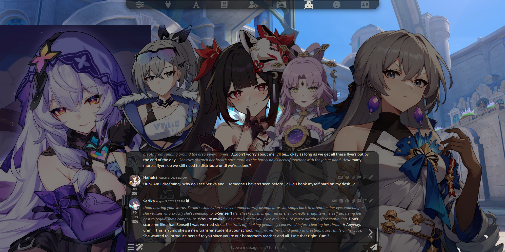
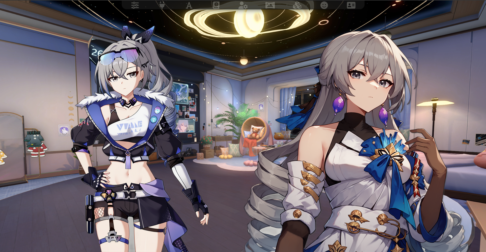

#
视觉小说（VN）模式
视觉小说模式是 SillyTavern 中的一种特殊屏幕布局，允许您与带有精灵图（或其角色卡片图像）的角色聊天，类似于《心跳文学部》、《灰色的果实》、《Fate: Stay/night》等著名视觉小说游戏的风格。
#
切换视觉小说模式
#
启用视觉小说模式
视觉小说模式是 SillyTavern 的内置功能，可以通过进入用户设置（用户设置图标）并在无文本阴影下方勾选视觉小说模式来切换。

#
禁用视觉小说模式
禁用视觉小说模式的步骤与启用相同。取消勾选视觉小说模式，您就会回到正常的聊天界面。
warning 关于带有 VN 扩展的 VN 模式
某些扩展（如 Prome VN 扩展）在使用其各自的 VN 模式时会自动开启"视觉小说模式"。从用户设置菜单启用/禁用 VN 模式也会影响这些扩展。
#
视觉小说界面

在视觉小说模式下，界面略有改变以适应显示在中央的角色精灵图（或角色卡片图像）。然而，在多角色群聊中，角色精灵图会相互分散开来，如下图所示。
#
带有 MovingUI 的 VN 模式
info
要切换 MovingUI，请进入用户设置并勾选MovingUI。请注意，此功能仅适用于桌面设备。
如果在用户设置中启用了MovingUI，您可以移动精灵图（或角色卡片图像）到屏幕上的特定位置。
warning 关于精灵图大小
如果您的角色精灵图相对较大，使用 MovingUI 移动某些精灵图可能会比较困难，因为拖动精灵图的按钮可能被现有精灵图覆盖。您可能需要多次移动它们，特别是当屏幕上有更多角色时，以获得更好的布局。
#
获取角色精灵图
获取角色精灵图可以通过浏览网络寻找现有精灵图，比如来自视觉小说或使用视觉小说功能的游戏（如 DDLC 或 CounterSide）中的现有角色。如果您想要的角色还没有精灵图，您还有以下几个选择：
在角色帖子中搜索精灵图 ZIP 包或精灵图包链接。
info
一些机器人创建者可能会在发布机器人时附带精灵图包（可能在同一帖子中或在精灵图频道中）。搜索这些帖子，看看是否有人已经制作了您想要的角色的精灵图。
使用 LoRAs 和 Stable Diffusion 创建自己的精灵图。
warning
从头开始生成精灵图非常耗时（特别是如果您的角色没有现成的 LoRAs 和/或您想使用的 Stable Diffusion 模型），并且需要decent的硬件配置，如果您计划制作 28 个表情精灵图而不是 6 个，以及如果您使用 SDXL 和/或将精灵图提升到更高分辨率，这一点尤为重要。
使用角色卡片图像。虽然它可能不像精灵图，但至少您有东西可以在屏幕上看。但是，VN 模式下不能使用多个角色卡片。
使用 Prome 视觉小说扩展的角色卡片图像
在 Prome 视觉小说扩展 1.0.6+ 版本中，有一个名为
将角色卡片模拟为精灵图的功能，允许您通过将角色卡片用作聊天中的精灵图来进行同时包含精灵图和非精灵图角色的群组聊天。
#
VN 扩展
#
Prome 视觉小说扩展
Prome 视觉小说扩展是由 Bronya Rand 和 Prometheus 开发的认可第三方扩展，它进一步增强了 SillyTavern 中的视觉小说体验，具有诸如信箱模式（使视觉小说界面更"电影化"）、带有角色精灵图变暗的焦点模式、传统 VN 模式（聊天中只显示最后一条消息）等功能，并计划添加更多功能！
| 信箱模式 | 传统 VN 模式 |
|---|---|
 |
 |
| 隐藏对话框 | 焦点模式（带精灵图变暗） |
|---|---|
|  |  |
要安装 Prome 视觉小说扩展，您可以通过进入下载扩展和资源并找到Prome 视觉小说扩展来安装，或按照 Prome 视觉小说扩展 Github 页面上的安装说明进行操作。调整 Prome 的设置可以在扩展 -> **Prome（视觉小说扩展）**中找到，或通过 🪄（魔杖）菜单访问。